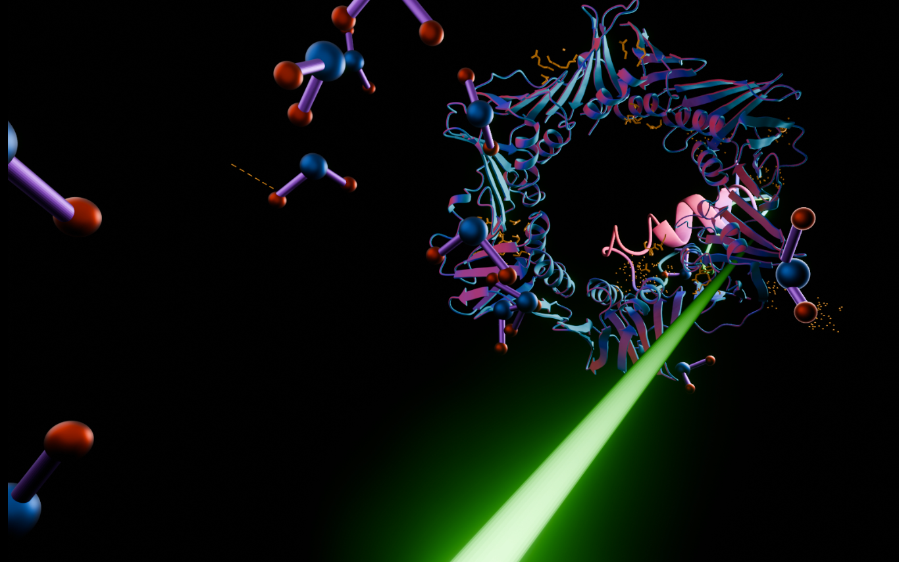
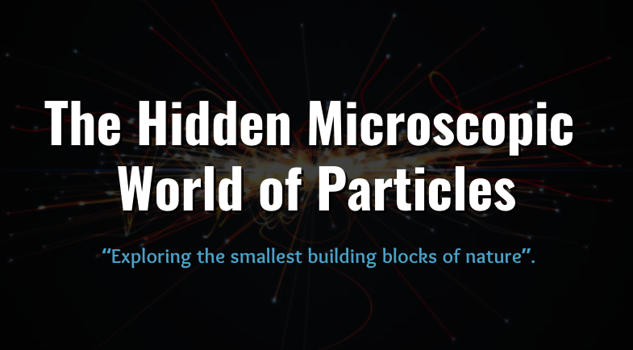

Sara Chopra
“M.Sc. Physics (UHH) graduate, focused on turning complex scientific research into clear, engaging communication for specialist and non-specialist audiences alike.”
Featured Work

CMS Web Infographic
Interactive explainer on how the CMS detector works at CERN with scrollytelling.

Videos & Posts
Short-form science videos, outreach posts, and visual explainers for research communication.

Teaching Material
Lecture slides, worksheets, and interactive explanations designed for different audience levels.
Application Documents
Master’s Thesis
Master's Thesis (PDF)
Sum Rules for the Extended Higgs Sector Models: A comparative analysis of 2HDM, GM and the Septet Model.
Master's Colloquium Slides (PDF)
Open the slides in your browser or download the PDF.